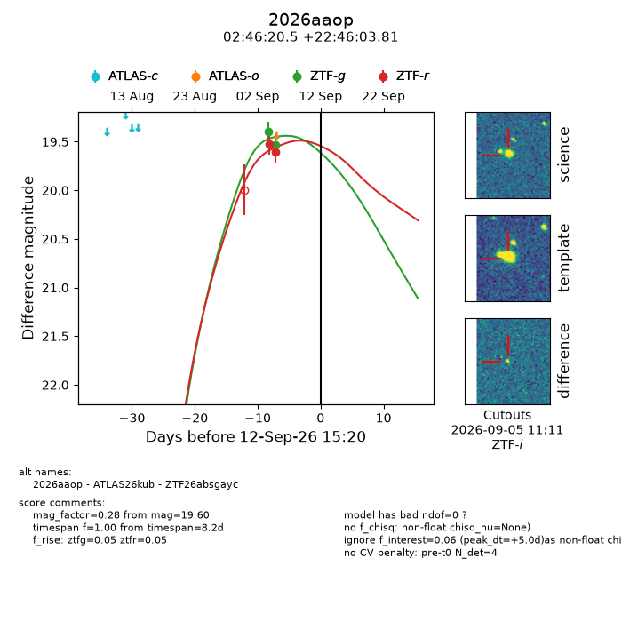
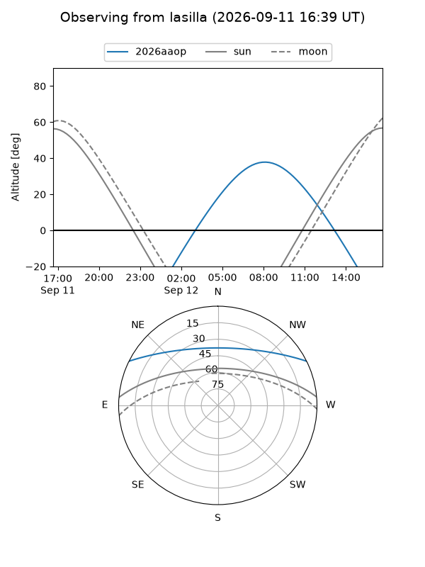
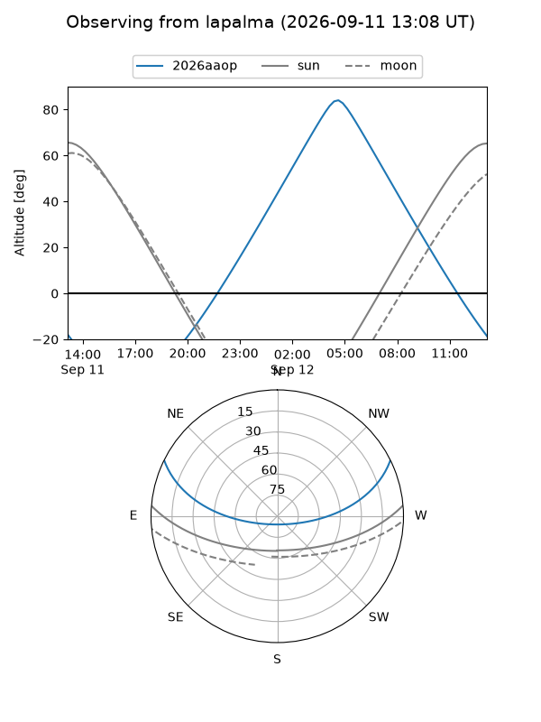
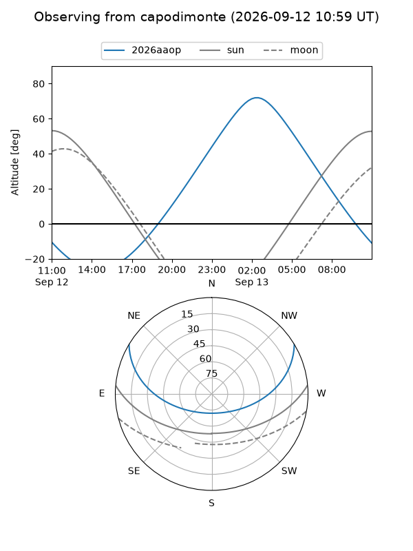
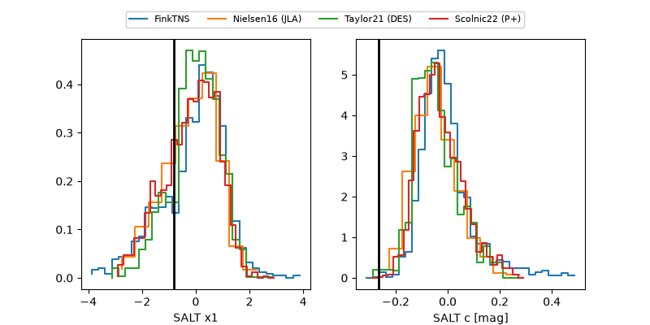

2026aaop
Target 2026aaop at 2026-09-12 15:22
Aliases and brokers:
FINK-ZTF: ztf.fink-portal.org/ZTF26absgayc
Lasair-ZTF: lasair-ztf.lsst.ac.uk/objects/ZTF26absgayc
ALeRCE-ZTF: alerce.online/object/ZTF26absgayc
YSE-PZ: ziggy.ucolick.org/yse/transient_detail/2026aaop
TNS name: wis-tns.org/object/2026aaop
Direct TNS query: direct search
alt names
ZTF26absgayc (ztf,fink_ztf)
2026aaop (tns,yse)
ATLAS26kub (atlas)
Coordinates:
equatorial (ra, dec) = 41.5852,+22.76772
equatorial (HMS+DMS) = 02:46:20.45,+22:46:03.81
galactic (l, b) = (154.7904,-32.90046)
Flags:
TNS type: nan
peak dt: +5.0
Photometry:
last ztfg=19.53, ztfr=19.60
2 ztfg, 2 ztfr detections
Lightcurve

Visibility



Additional plots
